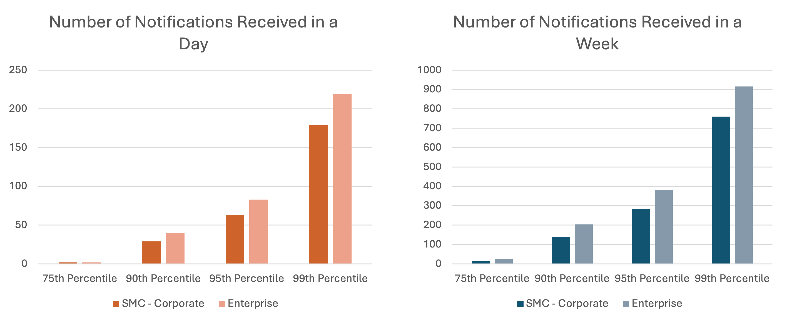
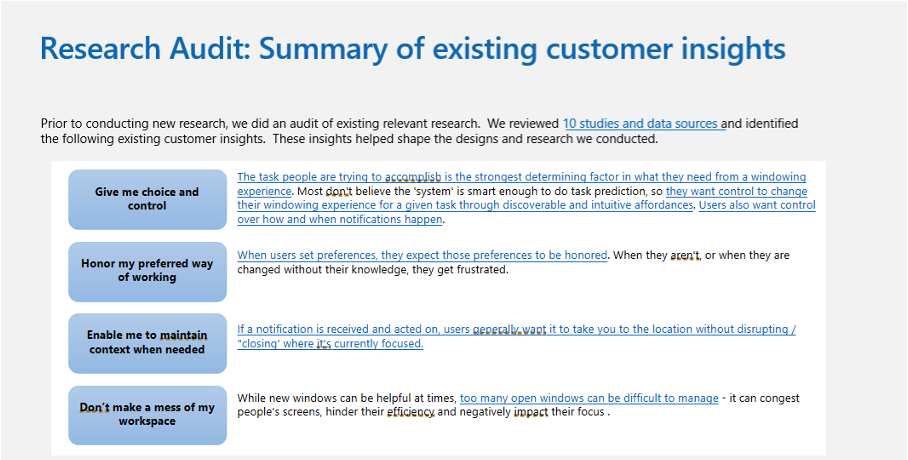
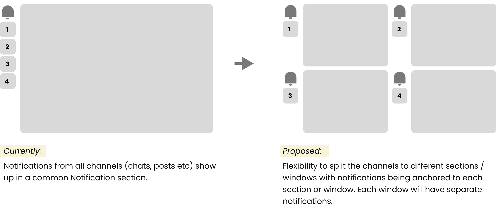
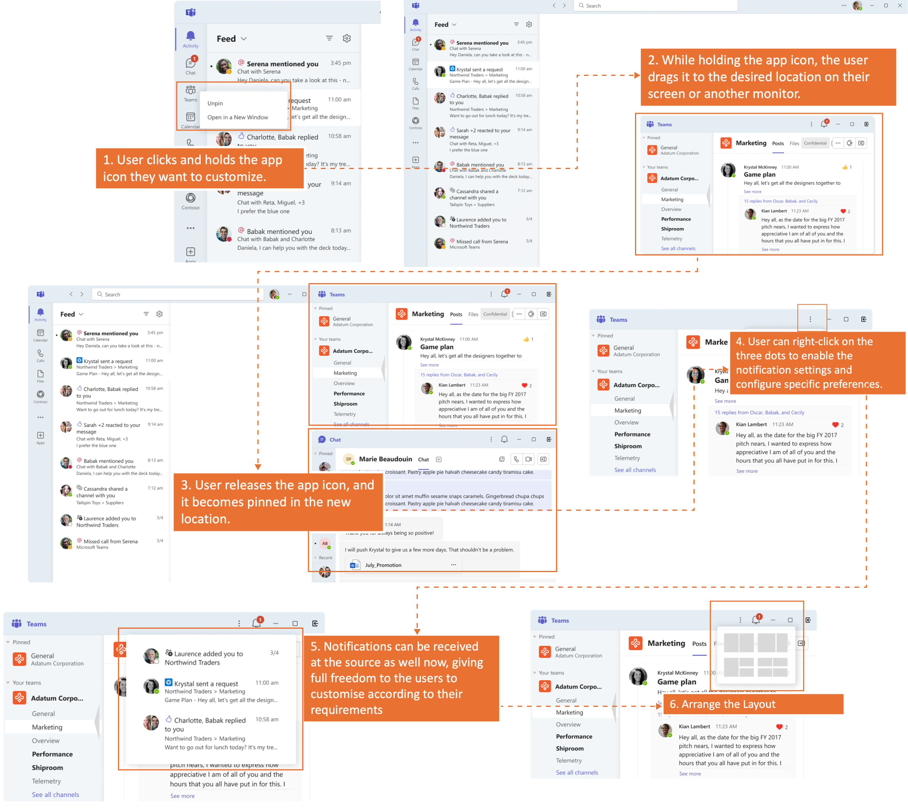
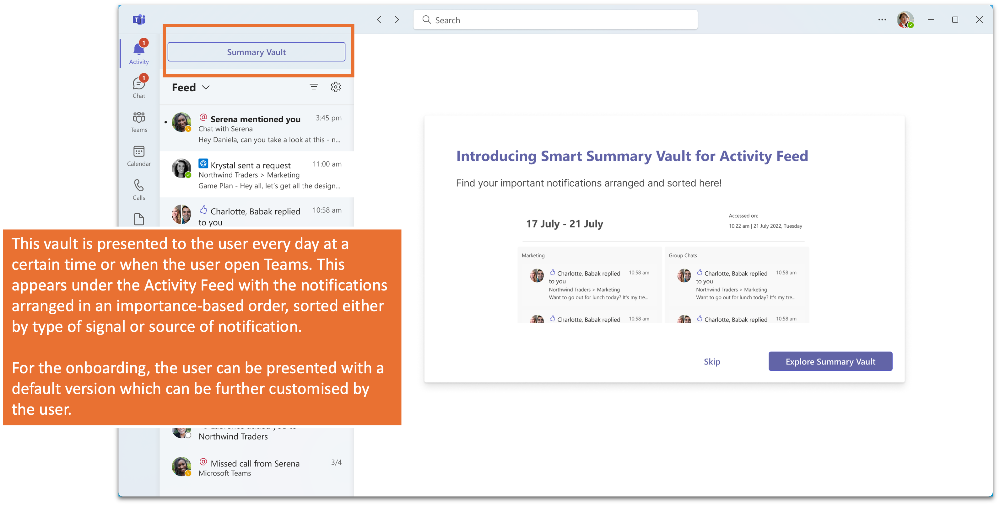
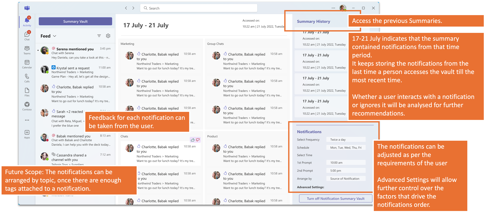
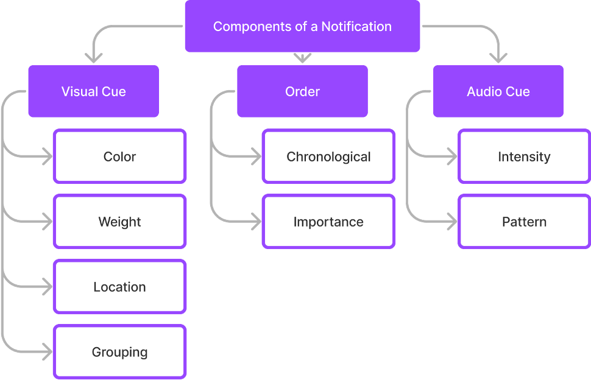
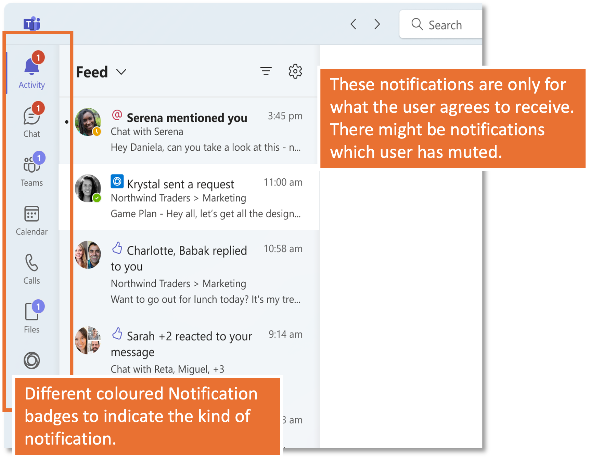
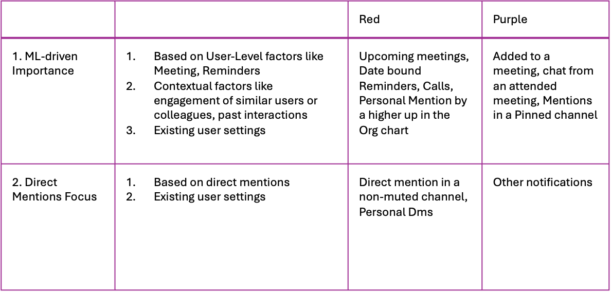

Problem Statement
Microsoft Teams treated every notification as urgent, creating a "noisy" environment where users struggled to distinguish signal from noise. This lack of hierarchy forced users to constantly context-switch to triage scattered messages, often leading to missed critical updates and high cognitive fatigue.
Solution Implemented
Explored four distinct conceptual directions to reduce cognitive load, moving beyond standard alerts. Concepts included a "Pull" system for batching low-priority summaries, a visual hierarchy model using color cues, bulk management tools for granular control, and source-anchored windows to preserve workflow context.
The Team
Product Team - 1 Product Intern (Me), 1 Product Manager (Mentor), 1 Product Lead
User Issues

Target Persona - Enterprise Users and SMC Corporate: Solving for 90th Percentile of Enterprise Users and SMC Corporate Users, as they receive notifications beyond a limit that is considered easily consumable (based on user conversations).
Issue 1: Teams is screaming for attention
Research indicates that the average time spent on any screen before switching is a mere 47 seconds due to constant self-interruption via checking email, chat, and/or social media (ref: Attention Span by Gloria Mark).
Issue 2: Triage is painful: too many places, too many clicks
"It's also hard to find things and keep them organized: information is fragmented and scattered in different places. Finally, there is a lot of context switching, moving from channel to channel, getting context and making sense of everything. A significant part of the issue here is this multi-channel info often is bound together only in users' minds with the mental glue of memory."
Issue 3: Important messages are missed
There is a flood of information through multiple channels (Teams chats, emails, meetings, documents, task/to-do lists). It can be very difficult to stay on top of things.
Solution 1: Anchored Notifications
Concept of "Anchor"
Anchor is the visual component of the app where the notifications surface on the interface, and anchored to source means the notification appears at the source itself. The user can directly reach the information being conveyed by the notification, without the trouble of an added middle layer.
Chat Notifications amount to 78% of the total notifications of any user, and anchoring would reduce the notifications to the Activity Feed, thus ensuring better click and engagement rate.
How this helps
Notifications are considered noise when the users are not able to take any further action on them or gain anything conclusive. Context is a major factor that helps in response which is being solved for with this solution.
Research Insights
"Users find viewing content in context within the tabs intuitive and valuable."
"Not having to switch between multiple windows enables multitasking and to focus on the content."

Solution : Anchored Notifications

Design Mockups

Solution 2: Pull Notifications System
Smart Notification Vault
Instead of pushing notifications to users, this system stores non-urgent and non-instant response-requiring notifications in a vault. Users access this vault at their preferred time to view and address the notifications.
iOS uses a similar system where they store and sort the notifications before sending out to the users.
1. Summary Vault

2. Summary History and Vault Settings

Solution 3: Defining Hierarchy of Notifications

Color of Notification Badges
- Sync between all the components of notification ensure smoother and better communication.
- Ensuring a consistent visual language reduces confusion.
- Dual colors will ensure that the users do not get triggered equally at every notification. Slack follows a similar pattern, and the feature has received positive feedback.
Purple and Red Notification Badges

